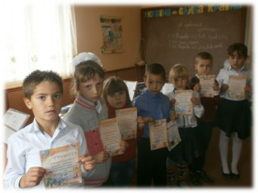
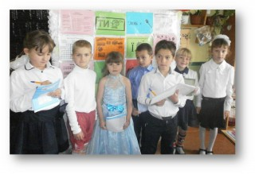
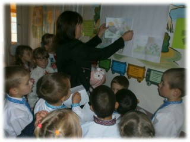

Тиждень початкової школи
Розпочався тиждень урочистою лінійкою, на якій учні познайомилися з планом проведення тижня початкової школи та були налаштовані на творчий підхід до отриманих завдань і активну участь у всіх запланованих заходах.
Яскраві враження залишилися після проведеної інтелектуально-розважальної гри «Я люблю Україну». На грі велика увага приділялася розвитку етикету та моралі у відносинах між учнями, під час якої вдалося стимулювати активність кожного учня, з метою розвитку здібностей і виховувати почуття дружби та взаємоповаги.

З цікавістю учні початкової ланки розгадували ребуси та кросворди, що привчають дітей до організованого систематичного здобуття знань, яке вимагає розвинених розумових і вольових зусиль, виховують допитливість, працелюбність та наполегливість.
